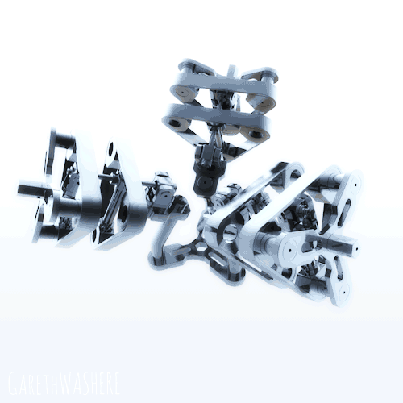

Методика работы
в ipython Notebooks
Составитель: Андропов В.В.
Производственная практика
В рамках данной
практики студенты с учителем выполняют задания на сервере с
установленным scipy-stack
Аналитика результатов обучения
Работа с базой данных системы дистанционного обучения°

Виртуальные симуляторы физических процессовТехнологии создания тренажеров для Дистанционного обучения
Тренажёры
Мобильные приложенияс обратной
связью